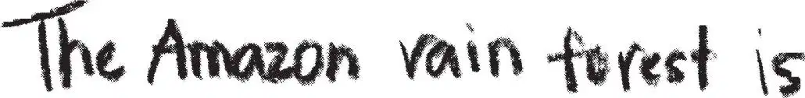
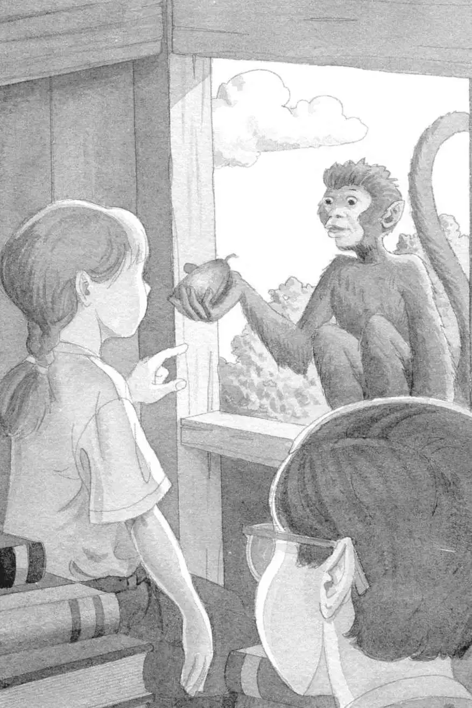

Jack and Annie climbed into the tree house.
Peanut was sitting on a stack of books.
Annie patted Peanut’s little head. “Thanks,” she said softly.
“I have to write some notes about the rain forest,” said Jack. “You find the Pennsylvania book.”
Annie began searching for the Pennsylvania book—the book that always took them home.
Jack pulled out his notebook.
He had wanted to take lots of notes here. But all he’d written so far was:

“It’s not here!” said Annie.
“What?” Jack looked up. He glanced around the tree house.
Annie was right. The Pennsylvania book was nowhere in sight.
“Was it here before we left home?” said Jack.
“I don’t remember,” said Annie.
“Oh, man,” said Jack. “Now we can’t get back to Frog Creek.”
“That means we’ll be here when the vampire bats come out,” said Annie.
Something came flying through the tree house window.
“Ahhh!” Jack and Annie hid their heads.
Thud.
Something hit the floor. A red fruit.
Jack looked up. The monkey was sitting in the window. His head was cocked to one side. He seemed to be grinning at them.
“You’re safe!” said Annie.
“Thanks for saving us,” said Jack.
The monkey just grinned.
“I have just one question,” said Annie. She pointed at the fruit. “Why do you keep throwing those at us?”
The monkey grabbed the fruit.
“No! Don’t throw it!” said Jack. He ducked.
But the monkey didn’t throw the fruit.
He held it out to Annie. He moved his lips as if he were trying to say something.

Annie stared into the monkey’s eyes. He moved his lips again.
“Wow,” Annie said softly. “I understand now.”
“Understand what?” said Jack.
Annie took the fruit from the monkey. “This is it,” she said. “The thing we need.”
“What thing?” said Jack.
“One of the special things we’re supposed to find for Morgan,” Annie said. “To free her from the spell.”
“Are you sure?” said Jack.
Before Annie could answer, Jack saw the Pennsylvania book. “Look! Our book!” he said, pointing.
“We found the thing. And now we can see the book,” said Annie. “That’s the way it works, remember?”
Jack nodded. Now he remembered. The ninja master said they wouldn’t be able to find the Pennsylvania book until they had found what they were looking for.
The monkey screeched with laughter.
Jack and Annie looked at him. He was clapping his hands together.
Annie laughed with him. “How did you know to give this to us?” she said. “Who told you to do that?”
The monkey just waved at Jack and Annie. Then he turned and swung away out of the tree house.
“Wait!” said Jack, looking out the window.
Too late.
The monkey was gone. He had vanished below the treetops.
“Good-bye!” called Annie.
A happy screech came from the mysterious world below.
Jack sighed. He picked up his notebook again. He looked at his writing:
He had to write something before they left. He quickly added—
Jack put away his notebook. Annie picked up the Pennsylvania book.
“Now it’s really time to leave,” she said.
She turned to the picture of the Frog Creek woods. “I wish we could go there,” she said, pointing at the picture.
The wind started to blow.
The leaves began to tremble.
The tree house began to spin.
It spun faster and faster.
Then everything was still.
Absolutely still.